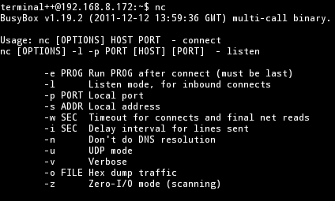

背景
在 android 应用程序调试过程中,由于一些反调试策略的存在,我们需要修改手机的boot镜像, 通过修改其中的 ro.debuggable 的值,使得所有应用程序可调试, 而不用费力去反编译 apk 再重新打包.这里将先大致说一下 Android 系统分区的相关知识并说明如何提取分区, 之后将会阐述如何对 boot 镜像进行解包,修改以及重新打包.
环境
Ubuntu 16.04 x64 + Android 4.2.2
shell@android:/ $ ls -al /dev/block/platform/hi_mci.0/by-name/ lrwxrwxrwx root root 2017-02-23 12:38 boot -> /dev/block/mmcblk0p20 lrwxrwxrwx root root 2017-02-23 12:38 cache -> /dev/block/mmcblk0p22 lrwxrwxrwx root root 2017-02-23 12:38 cust -> /dev/block/mmcblk0p28 lrwxrwxrwx root root 2017-02-23 12:38 data -> /dev/block/mmcblk0p29 lrwxrwxrwx root root 2017-02-23 12:38 dsp -> /dev/block/mmcblk0p17 lrwxrwxrwx root root 2017-02-23 12:38 fastboot2 -> /dev/block/mmcblk0p5 lrwxrwxrwx root root 2017-02-23 12:38 hifi -> /dev/block/mmcblk0p18 lrwxrwxrwx root root 2017-02-23 12:38 hisitest0 -> /dev/block/mmcblk0p24 lrwxrwxrwx root root 2017-02-23 12:38 hisitest1 -> /dev/block/mmcblk0p25 lrwxrwxrwx root root 2017-02-23 12:38 hisitest2 -> /dev/block/mmcblk0p26 lrwxrwxrwx root root 2017-02-23 12:38 log -> /dev/block/mmcblk0p3 lrwxrwxrwx root root 2017-02-23 12:38 logo -> /dev/block/mmcblk0p12 lrwxrwxrwx root root 2017-02-23 12:38 lowpower -> /dev/block/mmcblk0p13 lrwxrwxrwx root root 2017-02-23 12:38 mcuimage -> /dev/block/mmcblk0p1 lrwxrwxrwx root root 2017-02-23 12:38 misc -> /dev/block/mmcblk0p7 lrwxrwxrwx root root 2017-02-23 12:38 modemimage -> /dev/block/mmcblk0p16 lrwxrwxrwx root root 2017-02-23 12:38 modemlog -> /dev/block/mmcblk0p19 lrwxrwxrwx root root 2017-02-23 12:38 modemnvbkup -> /dev/block/mmcblk0p8 lrwxrwxrwx root root 2017-02-23 12:38 modemnvm1 -> /dev/block/mmcblk0p14 lrwxrwxrwx root root 2017-02-23 12:38 modemnvm2 -> /dev/block/mmcblk0p15 lrwxrwxrwx root root 2017-02-23 12:38 nvme -> /dev/block/mmcblk0p9 lrwxrwxrwx root root 2017-02-23 12:38 oeminfo -> /dev/block/mmcblk0p10 lrwxrwxrwx root root 2017-02-23 12:38 recovery -> /dev/block/mmcblk0p21 lrwxrwxrwx root root 2017-02-23 12:38 round -> /dev/block/mmcblk0p4 lrwxrwxrwx root root 2017-02-23 12:38 secureboot -> /dev/block/mmcblk0p6 lrwxrwxrwx root root 2017-02-23 12:38 system -> /dev/block/mmcblk0p27 lrwxrwxrwx root root 2017-02-23 12:38 teeos -> /dev/block/mmcblk0p2 lrwxrwxrwx root root 2017-02-23 12:38 userdata -> /dev/block/mmcblk0p23 lrwxrwxrwx root root 2017-02-23 12:38 vrcb -> /dev/block/mmcblk0p11
上面显示了整个Android系统中设备块mmcblk0各个分区的使用情况, 比如常见的recovery,system,boot等分区.以上是华为 Android 平板上的输出, 该平板本身是1G RAM 和 16GB ROM,那么这里的mmcblk0就应该就是对应该16GB ROM了,这16GB ROM是固态硬盘, (固态硬盘是由NAND Flash加上适当的控制芯片组成的,其中NAND Flash即闪存,全名是Flash Memory). 另外我还加了一块SD存储卡,对应的设备块是mmcblk1.
里面的 mmcblk 等等是什么意思呢? 这和 Linux SD 卡驱动开发有关,先说一些基本术语, MMC:Multi Media Card,就是多媒体卡的意思,一种非易失性存储器件, 在MMC基础之上又发展出了 SD卡:Security Digital Memory Card,也就是 安全数码卡,不过我们通常都说是 SD 卡.它向前兼容 MMC 卡.关于存储卡种类简直是太多了, 存储卡比较请参见 维基上的表格. 有了各种存储卡,就要有各种插口,术语我们就称之为 MCI:Multimedia Card Interface,即多媒体卡接口,在很多驱动程序的函数命中都含有"mci"这样的字样.
因此呢,mmcblk 就表示 MMC Block,也就是多媒体卡存储块, 它的基本格式是 mmcblkXpY,其中 X是设备上的 MMC 卡编号, p代表分区(partition), Y代表MMC卡上的分区编号. 譬如, mmcblk0p1 就表示MMC卡0上编号为1的分区.
Android 系统规范中,任何 Android 系统至少应该包含六个分区,如上面我用蓝色粗体表示出来的, 分别是: /boot /system /recovery /data /cache /misc , 其他的分区则都是设备相关的.下面是这几个分区的作用:
顾名思义,该分区引导 Android 设备,它包含了内核(kernel)和虚拟内存盘(ramdisk), 没有这个分区,那么你的设备是无法启动的.如果不是必要,不要删除这个分区, 如果你删除了这个分区,你可以刷入一个带有 /boot分区的ROM.
除了内核和虚拟内存盘之外,这个分区包含了整个 Android 系统的其他部分. 主要有Android GUI以及手机的预装应用程序.删除这个分区也就是删除了 Android 系统, 但是你仍然可以进入 recovery 模式,然后刷入一个新的 ROM.
Android 专门设计这个分区来进行系统备份. 可以认为该分区是另一个引导分区, 它允许设备进入到一个恢复模式控制界面,通过该界面来执行高级恢复和维护等操作. 比如清空 /data分区来将手机重置到工厂模式, 抑或是清空 /cache分区.
这个分区也叫作 userdata分区,它包含用户的各种数据, 比如联系人,短信,各种设置,以及你安装的 Android 应用程序.当你重置手机到工厂模式时, 这个分区将会被抹掉.
这个分区似乎没什么好解释的,就是存储系统常用的信息,增加存取速度.
这个分区包含系统里杂七杂八的设置,但是对于系统的正常运行则至关重要. 如果你抹掉这个分区,你的手机很有可能"罢工",甚至根本不会启动.
这样的话,你就可以很方便的转储Android系统的分区了,如果你打算将分区转储到某个分区上保存, 那么你需要知道系统的各个加载点,使用命令 cat /proc/mounts | cut -f1,2,3 -d ' ' 可以获取系统启动后的所有加载点.这里为了显示清晰些,取了mounts里面的前三列, 分别是 要加载的设备,加载到的位置,设备类型,后三列这里舍去了. 样例输出如下:
shell@android:/ $ cat /proc/mounts | cut -f1,2,3 -d ' ' rootfs / rootfs /dev/block/mmcblk0p14 /mnvm1:0 ext4 /dev/block/mmcblk0p15 /mnvm2:0 ext4 /dev/block/mmcblk0p19 /mnvm3:0 ext4 tmpfs /dev tmpfs devpts /dev/pts devpts proc /proc proc sysfs /sys sysfs none /dev/frz cgroup none /acct cgroup tmpfs /mnt/secure tmpfs tmpfs /mnt/asec tmpfs tmpfs /mnt/obb tmpfs none /dev/cpuctl cgroup /dev/block/mmcblk0p27 /system ext4 /dev/block/mmcblk0p23 /tmpdata ext4 /dev/block/platform/hi_mci.0/by-name/cust /cust ext4 /dev/block/mmcblk0p22 /cache ext4 /dev/block/mmcblk0p29 /data ext4 /sys/kernel/debug /sys/kernel/debug debugfs /data/share /mnt/shell/emulated sdcardfs /dev/block/vold/179:97 /mnt/ext_sdcard vfat /dev/block/vold/179:97 /mnt/secure/asec vfat tmpfs /mnt/ext_sdcard/.android_secure tmpfs
一般地,我们最希望将分区存储到内部存储的 SD 卡上 或者 外部存储卡上, 可是这里却没有 SD 卡加载点 /sdcard, 这里有点特殊,这可能和设备有关,但是通过文件类型, 我们可以很容易的识别出来SD卡加载到了哪里,比如上面绿色加粗的就是我的存储卡. sdcardfs类型的是内部存储的SD卡, 而 vfat类型对应的存储卡则是我另外插入的外部SD卡. 你可能觉得这不是很靠谱,那么借助df命令, 我们可以进一步确定我们的决定.该命令的样例输出如下:
root@android:/ # df Filesystem Size Used Free Blksize /mnvm1:0 15M 6M 8M 4096 /mnvm2:0 29M 3M 26M 1024 /mnvm3:0 59M 5M 54M 1024 /dev 444M 72K 443M 4096 /mnt/secure 444M 0K 444M 4096 /mnt/asec 444M 0K 444M 4096 /mnt/obb 444M 0K 444M 4096 /system 1007M 711M 296M 4096 /tmpdata 15M 4M 11M 4096 /cust 503M 237M 266M 4096 /cache 251M 4M 247M 4096 /data 12G 2G 9G 4096 /mnt/shell/emulated 12G 2G 9G 4096 /mnt/ext_sdcard 7G 914M 6G 32768 /mnt/secure/asec 7G 914M 6G 32768
那么对应一看,我们便可以确定了.然后转储分区也就很容易了.命令如下:
adb shell su dd if=/path/to/blk of=/path/to/save/partition.img
比如:
adb shell su dd if= /dev/block/mmcblk0p21 of=/mnt/ext_sdcard/recovery.img
如果你想读取这些分区文件,你可以使用下面的命令:
mkdir -p /mnt/disk mount -o loop recovery.img /mnt/disk cd /mnt/disk
然而需要说明的是,如果转储的分区大于4GB,那么是无法将其转储到存储卡上的, 因为目前来说,大多数手机只支持FAT32文件系统的存储卡,而FAT32不能存储大于4GB的单个文件. 那么如何解决呢,让我们祭出netcat.
我这里的data分区大小为12GB.因此采用nc来进行分区转储,将分区数据传输到电脑硬盘上,要求你的电脑硬盘文件系统是NTFS,或者是ext4等.
nc既可以做服务器端,也可以做客户端,这样的话,我们使用nc在Android上面建立一个服务器, 由于nc的功能强大,我们可以在服务器接收到连接后执行一些命令, 我们可以指定android上的nc服务端收到连接时执行 dd,dd在不给定输出位置时, 将会默认输出到 stdout,也就是标准输出,而这个输出将会通过nc反馈给连接nc服务端的客户端. 我们只需要在PC上使用nc建立一个请求连接的客户端,这样的话,我们在PC上就可以直接获得dd的输出了, 为了了解复制进度,我们使用工具pv来监视,在保证Android和PC位于同一局域网的情况下, 执行命令如下:
====Android端==== #PC上打开一个终端进入 adb shell #使用命令netcfg查看Android的ip地址,这里为192.168.2.172 netcfg #netcat建立服务端 nc -l -p 5555 -e /system/xbin/busybox dd if=/dev/block/mmcblk0p29 ====PC端==== nc 192.168.2.172 5555 | pv > mmcblk0p29.img
我一共传输了 12GB,花费了 1小时34分.
关于 nc 需要注意的另外一个事情就是, android 系统里的 nc 是简化版本的 nc,它的用法参见下图:
因此如果你要在 android 上开一个nc服务器,那么命令格式如下(-l -p要同时存在):
nc -l -p PORT
如果是作为一个 nc 客户端,连接服务器则是:
nc HOST PORT
现在让我们提取 boot 分区,根据上一节的描述,我们可以用 nc 来转储,由于我已经通过 adb令连接了手机, 所以以下操作全是在电脑上操作:
adb shell "su 0 nc -l -p 6789 -e dd if=/dev/block/mmcblk0p20" & nc 192.168.8.172 6789 | pv > boot.img
通过 file boot.img命令我们查看一下 dump 出来的镜像:
boot.img: Android bootimg, kernel (0x6d08000), ramdisk (0xad00000), page size: 2048, cmdline (k3v2mem k3v2_ion=1 androidboot.hardware=hws10231l vmalloc=448M )
当我们把 boot 分区 dump 出来之后,我们就需要解包, 然后修改 default.prop 里面的ro.debuggable=1 和 ro.secure=0. 这个过程总体来说不复杂,但是很繁琐.繁琐到让人抓狂.于是在手动做了一遍后,我决定写一个bash 脚本来自动化完成这些工作. 脚本如下,我将结合脚本来说一下解包打包的工作过程.
#! /bin/bash
#Source:
# #1: split-bootimage
# https://github.com/mpersano/bootimg-tools/blob/master/split-bootimage.py
# #2: mkbootfs
# https://github.com/osm0sis/mkbootfs
# #3: mkbootimg
# https://github.com/osm0sis/mkbootimg
#
#Credits:
# Many thanks to the authors above for the great work!
# I just do some little modification to their codes
# to complete my goals.
#
#by bugnofree 2017-05-12
if [[ $# -ne 1 ]];then
echo Usage:$0 filename.img
exit 1
fi
BOOTIMG=$(realpath $1)
#echo $BOOTIMG
ROOTPATH=$PWD
if [[ -d "$ROOTPATH/bin" ]];then
rm -rf "$ROOTPATH/bin"
fi
mkdir $ROOTPATH/bin
echo \#1: ----------Compile binary tools----------
echo Compile mkbootfs ...
cd $ROOTPATH/src/mkbootfs && make > /dev/null && mv mkbootfs $ROOTPATH/bin/ && \
make clean > /dev/null && cd $ROOTPATH
echo Done!
echo Compile mkbootimg and unpackbootimg ...
cd $ROOTPATH/src/mkbootimg && make > /dev/null && \
mv mkbootimg unpackbootimg $ROOTPATH/bin/ && make clean > /dev/null && \
cd $ROOTPATH
echo Done!
if [[ ! -f "$ROOTPATH/bin/mkbootfs" && ! -f "$ROOTPATH/bin/mkbootimg" && ! -f "$ROOTPATH/bin/unpackbootimg" ]];then
echo "Binary tools compile failed! Please try agagin!"
exit 1
fi
echo \#2: ----------Unpack boot image and ramdisk----------
mkbootfs=$ROOTPATH/bin/mkbootfs
mkbootimg=$ROOTPATH/bin/mkbootimg
unpackbootimg=$ROOTPATH/bin/unpackbootimg
splitboot="python $ROOTPATH/src/split_bootimage.py"
$splitboot $BOOTIMG
RAMDISK=$ROOTPATH/ramdisk-unpacked
if [[ -d $RAMDISK ]];then
rm -r $RAMDISK
fi
mkdir $RAMDISK && cd $RAMDISK
gzip -dc $ROOTPATH/boot-ramdisk.gz | cpio -i --quiet
echo \#3: ----------Setup ro.debuggable + ro.secure and repack ramdisk----------
sed -i 's/^ro\.secure=.*/ro\.secure=0/' default.prop
sed -i 's/^ro\.debuggable=.*/ro\.debuggable=1/' default.prop
$mkbootfs $RAMDISK | gzip > $ROOTPATH/debuggable-ramdisk.img
cd $ROOTPATH
echo "Done!"
echo \#4: ----------Repack the boot image----------
CMDLINE=$($unpackbootimg -f $BOOTIMG | grep BOARD_KERNEL_CMDLINE | cut -f1 -d' ' --complement)
#echo CMDLINE=$CMDLINE
BASE=$($unpackbootimg -f $BOOTIMG | grep BOARD_KERNEL_BASE | cut -f2 -d' ')
#echo BASE=$BASE
RAMDISK_OFFSET=$($unpackbootimg -f $BOOTIMG | grep BOARD_RAMDISK_OFFSET | cut -f2 -d' ')
#echo RAMDISK_OFFSET=$RAMDISK_OFFSET
SECOND_OFFSET=$($unpackbootimg -f $BOOTIMG | grep BOARD_SECOND_OFFSET | cut -f2 -d' ')
#echo SECOND_OFFSET=$SECOND_OFFSET
TAGS_OFFSET=$($unpackbootimg -f $BOOTIMG | grep BOARD_TAGS_OFFSET | cut -f2 -d' ')
#echo TAGS_OFFSET=$TAGS_OFFSET
$mkbootimg --base 0x$BASE --ramdisk_offset 0x$RAMDISK_OFFSET --second_offset \
0x$SECOND_OFFSET --tags_offset 0x$TAGS_OFFSET --cmdline "$CMDLINE" \
--kernel $ROOTPATH/boot-kernel --ramdisk $ROOTPATH/debuggable-ramdisk.img \
-o $ROOTPATH/debuggable-boot.img
echo "Done!"
echo \#5: ----------Clean the trash----------
rm $ROOTPATH/boot-kernel
rm $ROOTPATH/boot-ramdisk.gz
rm $ROOTPATH/debuggable-ramdisk.img
rm -r $ROOTPATH/bin/
rm -r $RAMDISK
echo "Done!"
echo && echo "Those fucking tedious works have been done!" && echo
echo "Your fastboot path is put on the following,run fastboot command with root privilege:"
printf " %s\n" "$(which fastboot)"
echo "Some useful commands for you :"
printf " %s\n" "adb reboot bootloader"
printf " %s\n" "sudo $(which fastboot) flash boot $ROOTPATH/debuggable-boot.img"
printf " %s\n" "sudo $(which fastboot) reboot"
下载地址:链接：http://pan.baidu.com/s/1dFekHHJ 密码：jsp4.说一下使用方法,解压 bootmod.zip后得到一个 bootmod文件夹, 在该文件夹的结构如下:
bootmod
├── dbgbootmaker
├── README
└── src
├── mkbootfs
├── mkbootimg
└── split_bootimage.py
其中 src 文件夹为执行过程中所用到的工具或者源码,执行过程中会进行编译, 然后生成所需的文件. README 是一些说明. dbgbootmaker 是最主要的 bash 脚本. 进入 bootmod 后,执行命令 dbgbootmaker /path/to/boot.img即可, 其中的 /path/to/boot.img 就是你从手机上提取出来的 boot 镜像. 执行完成后,将会在 bootmod 目录下生成一个新的文件 debuggable-boot.img, 刷入该文件即可.刷入的参考命令将会输出供你参考.一个样例输出如下:
username@shell:bootmod$ ./dbgbootmaker ../boot.img
#1: ----------Compile binary tools----------
Compile mkbootfs ...
Done!
Compile mkbootimg and unpackbootimg ...
Done!
#2: ----------Unpack boot image and ramdisk----------
Writing boot-kernel ...
Complete.
Writing boot-ramdisk.gz ...
Complete.
#3: ----------Setup ro.debuggable + ro.secure and repack ramdisk----------
Done!
#4: ----------Repack the boot image----------
Done!
#5: ----------Clean the trash----------
Done!
Those fucking tedious works have been done!
Your fastboot path is put on the following,run fastboot command with root privilege:
/path/to/sdk/platform-tools/fastboot
Some useful commands for you :
adb reboot bootloader
sudo /path/to/sdk/platform-tools/fastboot flash boot /path/to/bootmod/debuggable-boot.img
sudo /path/to/sdk/platform-tools/fastboot reboot
如上面的样例输出,总的来说该脚本主要做了 5 步:
几个命令解释一下:
gzip -dc boot.img-ramdisk.gz | cpio -i sed -i 's/^ro\.secure=.*/ro\.secure=0/' default.prop sed -i 's/^ro\.debuggable=.*/ro\.debuggable=1/' default.prop
gzip命令中,-d表示解压,-c表示将解压后的文件重定向到 stdout, 而 gzip 解压后得到的是 cpio 类型的文件,于是呢,可以通过管调用 cpio 来提取文件.
sed -i 命令表示直接修改源文件,替换命令是 s/strA/strB/,将strA替换为strB. strA和strB中默认启用正则表达式.因此这里寻找开头是ro.secure的行,将其替换为re.secure=0, 类似的,将ro.debuggable=0替换为ro.debuggable=1.